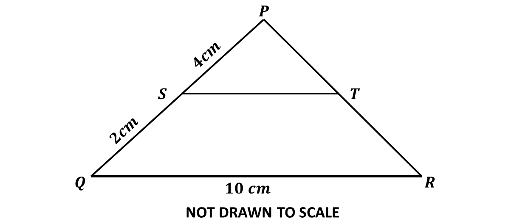
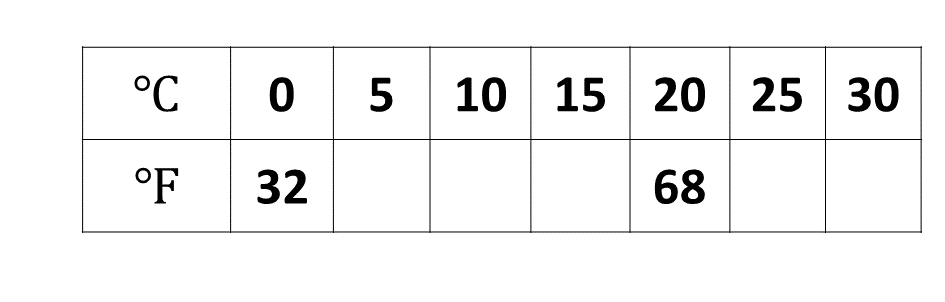

GUIDE (BECE - 2024)
You have 60 minutes for each section. Try to work on your speed as you prepare towards the final exam.
Good luck and remember to check your answers with the solutions provided. If you have any questions, feel free to ask your teacher or refer to the video lessons for more help.
Section A - Multiple Choice Questions
This section contains 40 multiple choice questions. You have 60 minutes to complete it.
Each question has four options labeled A to D. Select the correct answer for each question.
Section B
Question 1
-
A fair die and a fair coin are thrown together once.
\((i)\) Write down the set of all possible outcomes.
\((ii)\) Find the probability of obtaining a prime number and a tail.
-
The map of a field is drawn to a scale of \(1:100\). If the width and area of the field on the map are 8 cm and 88 cm\(^2\) respectively, find in m\(^2\), the area of the actual field.
-
Copy and complete the \(3 \times 3\) magic square such that the sum of the numbers in each row, column and diagonal is equal to 21.

Question 1.a.i
Fair die sample space
\(\Rightarrow \{1, 2, 3, 4, 5, 6\} \)
Fair coin sample space
\(\Rightarrow \{\text{Head (H), Tail (T)}\} \)
Sample space for all possible outcomes:
Question 1.a.ii
Total possible outcomes = 12
Successful outcomes (S)
\(\Rightarrow\) Prime number and a tail
\(\Rightarrow\) {T2, T3, T5}
\(n(\text{successful outcomes}) = 3\)
\(Probability = \dfrac{n(\text{successful outcomes})}{\text{total outcomes}}\)
\(\Rightarrow Prob(S) = \dfrac{3}{12}\)
\(\Rightarrow Prob(S) = \dfrac{1}{4}\)
\(\therefore\) the probability of obtaining a prime number and a tail is \(\frac{1}{4}\)
Question 1.b.
Scale \(\Rightarrow 1:100\)
width \(\Rightarrow 8\) cm
\(\Rightarrow\) Actual width \(= 8 \ cm \times 100\)
\(\Rightarrow\) Actual width \(= 800 \ cm\)
\(\Rightarrow\) Actual width \(= 8 \ m\)
Area \(\Rightarrow 88\) cm\(^2\)
Area = length \(\times\) width
\(\Rightarrow \text{length} = \dfrac{\text{Area}}{\text{width}}\)
\(\Rightarrow \text{length} = \dfrac{88 \ cm^2}{8 \ cm}\)
\(\Rightarrow \text{length} = 11 \ cm\)
\(\Rightarrow\) Actual length \(= 11 \ cm \times 100\)
\(\Rightarrow\) Actual length \(= 1100 \ cm\)
\(\Rightarrow\) Actual length \(= 11 \ m\)
\(\Rightarrow\) Actual Area \(=\) Actual length \(\times\) Actual width
\(\Rightarrow\) Actual Area \( 11 \ m \times 8 \ m\)
\(\Rightarrow\) Actual Area \(= 88 \ m^2\)
\(\therefore\) the actual area of the field is 88 m\(^2\)
Question 1.c.
Question 2
-
Given the vectors \(\mathbf{p} = \begin{pmatrix} m + 3 \\ 2 - n \end{pmatrix}\), \(\mathbf{q} = \begin{pmatrix} 3m - 1 \\ n - 8 \end{pmatrix}\) and \(\mathbf{p} = \mathbf{q}\), find the values of \(m\) and \(n\).
-
A man shared an amount of money between his children Baaba and William in the ratio \(6:5\). Baaba received Gh₵1,200.00.
\((i)\) Find the total amount shared.
Question 2.b.i
Baaba's share \(=\) Gh₵ \(1,200.00\)
Baaba's ratio \(=\) 6
William's ratio \(=\) 5
Total ratio \(=\) \(6 + 5\)
\(\hspace{1.4cm}=\) \(11\)
If Baaba's ratio, 6 \(=\) Gh₵ \(1,200.00\)
then total ratio, 11 \(=\) \(\dfrac{11}{6} \times 1200\)
\(\Rightarrow\) \(11 \times 200\)
\(\Rightarrow\) Gh₵ \(2,200.00\)
\(\therefore\) the total amount shared was Gh₵ 2,200.00
\((ii)\) William invested his share in an account at the rate of \(20\%\) simple interest per annum for 2 years. Find the total amount in his account at the end of the 2 years.
Question 2.b.ii
Principal = William's share
William's share
\(\Rightarrow\) Amount shared \(-\) Baaba's share
\(\Rightarrow\) Gh₵ \(2,200\) \(-\) Gh₵ \(1,200\)
\(\Rightarrow\) Gh₵ \(1,000\)
\(\therefore\) Principal, P \(=\) Gh₵ \(1,000.00\)
Rate, R \(=\) \(20\%\)
Time, T \(=\) \(2\) years
Simple Interest, \(I = \dfrac{P \times R \times T}{100}\)
\(I = \dfrac{1000 \times 20 \times 2}{100}\)
\(I = 10 \times 40\)
\(I = 400\)
\(\therefore\) the interest earned was Gh₵ \(400.00\)
Total amount \(=\) Principal \(+\) Interest
Total amount \(= 1000 + 400\)
Total amount \(= 1,400.00\)
\(\therefore\) the total amount of Williams money was Gh₵ 1,400.00
Question 2a
\(\mathbf{p} = \begin{pmatrix} m + 3 \\ 2 - n \end{pmatrix}\)
\(\mathbf{q} = \begin{pmatrix} 3m - 1 \\ n - 8 \end{pmatrix}\)
\(\mathbf{p} = \mathbf{q}\)
Finding \(m\):
\(\Rightarrow \begin{pmatrix} m + 3 \\ 2 - n \end{pmatrix} = \begin{pmatrix} 3m - 1 \\ n - 8 \end{pmatrix}\)
\(\Rightarrow m + 3 = 3m - 1\)
\(\Rightarrow 3 + 1 = 3m - m\)
\(\Rightarrow 4 = 2m\)
\(\Rightarrow \dfrac{2m}{2} = \dfrac{4}{2}\)
\(\Rightarrow m = 2\)
Finding \(n\):
\(\Rightarrow 2 - n = n - 8\)
\(\Rightarrow 2 + 8 = n + n\)
\(\Rightarrow 10 = 2n\)
\(\Rightarrow \dfrac{2n}{2} = \dfrac{10}{2}\)
\(\Rightarrow n = 5\)
\(\therefore\) m is 2 and n is 5
Question 3
-
Simplify: \(3\sqrt{50} + 2\sqrt{45} - \sqrt{2} + \sqrt{5}\).
- A wire of length 38 cm is bent into the shape of a rectangle whose length is 7 cm more than the width. Find the area of the rectangle.
- If \(15\%\) of the length of a rope is 720 metres, find half of the length of the rope.
Solution
\(3\sqrt{50} + 2\sqrt{45} - \sqrt{2} + \sqrt{5}\)
\(3(5\sqrt{2}) + 2(3\sqrt{5}) - \sqrt{2} + \sqrt{5}\)
\(\Rightarrow 15\sqrt{2} + 6\sqrt{5} - \sqrt{2} + \sqrt{5}\)
Grouping like terms:
\(\Rightarrow 15\sqrt{2} - \sqrt{2} + 6\sqrt{5} + \sqrt{5}\)
\(\Rightarrow 14\sqrt{2} + 7\sqrt{5}\)
Let the width of the rectangle, W \(\Rightarrow x\).
Then the length of the rectangle, L \(\Rightarrow x + 7\).
The perimeter of the rectangle \(\Rightarrow 38\) cm.
Perimeter $= 2(L + W)$
Substituting the values:
\(\Rightarrow 38 = 2(x + 7 + x)\)
\(\Rightarrow 38 = 2(2x + 7)\)
\(\Rightarrow 38 = 4x + 14\)
\(\Rightarrow 38 - 14 = 4x\)
\(\Rightarrow 4x = 24\)
\(\Rightarrow \dfrac{4x}{4} = \dfrac{24}{4}\)
\(\Rightarrow x = 6\)
\(\therefore\) The width of the rectangle is \(6\) cm, and the length is \(6 + 7 = 13\) cm.
The area of the rectangle \(= \text{length} \times \text{width}\).
\(\Rightarrow\) Area \( = 13 \times 6\)
\(\Rightarrow \text{Area} = 78\) cm\(^2\)
\(\therefore\) The area of the rectangle is \(78\) cm\(^2\).
Question 3c
Half of rope \(= 50\%\)
If \(15\% = 720 \ \text{metres}\)
Then \(50\% = \dfrac{50}{15} \times 720 \ \text{metres}\)
\(\hspace{1.5cm}\Rightarrow \dfrac{10}{3} \times 720 \ \text{metres}\)
\(\hspace{1.5cm}\Rightarrow 10 \times 240 \ \text{metres}\)
\(\hspace{1.5cm}\Rightarrow 2,400 \ \text{metres}\)
\(\therefore\) Half of the length of the rope is 2,400 metres.
Question 4
- Using a ruler and a pair of compasses only, construct \(\triangle PQR\) such that angle \(PQR = 90^\circ\), \(|PQ| = 5.5\) cm and \(|QR| = 8\) cm.
- Construct a perpendicular of \(\overline{PR}\) from \(Q\).
- Locate \(M\), the intersection of the perpendicular and \(\overline{PR}\).
-
Measure:
\((i)\hspace{0.65cm}\) \(|MR|\);
\((ii)\hspace{0.5cm}\) \(|QM|\).
- Calculate, correct to the nearest whole number, the area of triangle \(QMR\).
Solution
Question 5
-
In the diagram, \(\triangle PQR\) is an enlargement of \(\triangle PST\). \(|PS| = 4\) cm, \(|QS| = 2\) cm and \(|QR| = 10\) cm.
\((i)\) Find the length of \(\overline{ST}\).
Question 5.a.i
\(|PS| = 4\) cm
\(|QS| = 2\) cm
\(|QR| = 10\) cm
Scale factor, \(k = \dfrac{\text{image length}}{\text{object length}}\)
\(\Rightarrow k = \dfrac{4 \ cm + 2 \ cm}{4 \ cm}\)
\(\Rightarrow k = \dfrac{6 \ cm}{4 \ cm}\)
\(\Rightarrow k = \dfrac{3}{2}\)
\(\therefore\) the scale factor of the enlargement is \(\frac{3}{2}\)
Scale factor, \(k = \dfrac{|\overline{QR}|}{|\overline{ST}|}\)
\(\Rightarrow \dfrac{3}{2} = \dfrac{10 \ cm}{|\overline{ST}|}\)
Cross multiply:
\(\Rightarrow 3 \times |\overline{ST}| = 2 \times 10 \ cm\)
\(\Rightarrow 3|\overline{ST}| = 20 \ cm\)
\(\Rightarrow \dfrac{3|\overline{ST}|}{3} = \dfrac{20}{3} \ cm\)
\(\Rightarrow |\overline{ST}| = \dfrac{20}{3} \ cm\)
\(\Rightarrow |\overline{ST}| = 6.6667 \ cm\)
\(\therefore\) the length of \(\overline{ST}\) is 6.6667 cm
\((ii)\) If \(|\overline{PQ}| = |\overline{PR}|\), find the area of \(\triangle PQR\).
Question 5.a.ii

\(|\overline{PQ}| = |\overline{PR}|\)
let \(M \Rightarrow\) the midpoint of \(\overline{QR}\)
\(\Rightarrow |\overline{PM}|\) is perpendicular to \(|\overline{QR}|\)
\(\Rightarrow |\overline{MR}| = \frac{1}{2}|\overline{QR}|\)
\(\Rightarrow |\overline{MR}| = \frac{1}{2}\times 10 \ cm\)
\(\Rightarrow |\overline{MR}| = 5 \ cm\)
Using the Pythagoras theorem:
\(|\overline{PR}|^2 = |\overline{MR}|^2 + |\overline{PM}|^2 \)
\(\Rightarrow 6^2 = 5^2 + |\overline{PM}|^2\)
\(\Rightarrow |\overline{PM}|^2 = 36 - 25 \)
\(\Rightarrow |\overline{PM}|^2 = 11 \)
\(\Rightarrow |\overline{PM}| = \sqrt{11} \ cm \)
Area of triangle
\(\Rightarrow \frac{1}{2} \times \text{length} \times \text{width} \)
Area of \(\triangle PQR\)
\(\Rightarrow \frac{1}{2} \times |\overline{QR}| \times |\overline{PR}|\)
\(\Rightarrow \frac{1}{2} \times 10 \ cm \times \sqrt{11} \ cm\)
\(\Rightarrow 5 \ cm \times \sqrt{11} \ cm\)
\(\Rightarrow 5\sqrt{11} \ cm^2\)
\(\therefore\) the area of \(\triangle PQR\) is \(5\sqrt{11} \ cm^2\)
-
The total area of a school compound is 900\(\frac{1}{2}\) m\(^2\). The school has Administration and Classroom block, Library, School Park, Roads and Walkways. The areas of the Administration and Classroom block, Library and School Park are 300\(\frac{1}{4}\) m\(^2\), 200\(\frac{1}{2}\) m\(^2\), and 120\(\frac{1}{8}\) m\(^2\) respectively. Find the area covered by Roads and Walkways altogether.
Question 5.b
Total area of school compound \( \Rightarrow 900\frac{1}{2}\) m\(^2\)
Administration and classroom block \( \Rightarrow 300\frac{1}{4}\) m\(^2\)
Area covered by Library \(\Rightarrow 200\frac{1}{2}\) m\(^2\)
Area covered by School Park \(\Rightarrow 120\frac{1}{8}\) m\(^2\)
Hence, area covered by Roads and Walkways:
\(\Rightarrow\) \(900\frac{1}{2} - \left( 300\frac{1}{4} + 200\frac{1}{2} + 120\frac{1}{8}\right)\)
\(\Rightarrow\) \(\frac{1801}{2} - \left(\frac{1201}{4} + \frac{401}{2} + \frac{961}{8}\right)\)
\(\Rightarrow\) \(\frac{1801}{2} - \left(\frac{2(1201) + 4(401) + 1(961)}{8}\right)\)
\(\Rightarrow\) \(\frac{1801}{2} - \left(\frac{2402 + 1604 + 961}{8}\right)\)
\(\Rightarrow\) \(\frac{1801}{2} - \frac{4967}{8}\)
\(\Rightarrow\) \(\frac{4(1801) - 1(4967)}{8}\)
\(\Rightarrow\) \(\frac{7204 - 4967}{8}\)
\(\Rightarrow\) \(\frac{2237}{8}\)
\(\Rightarrow\) \(279\frac{5}{8}\) m\(^2\)
\(\therefore\) the area covered by Roads and Walkways is \(279\frac{5}{8}\) m\(^2\)
Question 6
-
Copy and complete the table for the relation \(F = \frac{9}{5}C + 32\),
where \(F\) and \(C\) are degrees Fahrenheit and degrees Celsius respectively.

-
Using a scale of 2 cm to 10 units on the vertical axis \((^\circ F)\) and 2 cm to 5 units on the horizontal axis \((^\circ C)\), draw a linear graph for the relation.
-
Use the graph to find the temperature in degrees Celsius when \(F = 55\) degrees.
-
Interpret the slope of the relation.
Solution